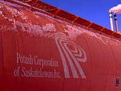
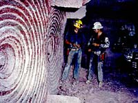
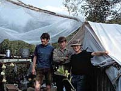
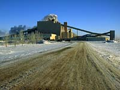

Activity Format
Mining Interview
Career Plan
Mine Field Trip
Uranium: Concept Map
Uranium: The Debate

|
Activity Format  These mining activities follow a similar format. To become familiar with the way they are arranged, check out this page.
 The Career Plan Goals are a means of planning for the future. This activity allows you to plan, research possible employment in the mining industry, practice writing a resume and even make a job application.
The Concept Map How are the terms uranium, water, trees and people related? Discover the relationships that exist between uranium mining and the environment.
|
|
|
|
Careers in Mining  The Interview Have you ever wondered what it would be like to work in the mining industry? Here is your chance to find out first hand what it is like by conducting an interview. Take along a tape recorder for the best results!
 Get ready for a unique experience - a trip to a mine. View from the outside (and inside...if there is one). Proper preparation can make this activity one worth trying!
The Debate Uranium mining contributes substantially to our economy; but do you think we should use this uranium as an energy source? Read all the information then get started.
|